Introduction To 2D Dynamic Programming / Ninja Training
In this article, we will understand the concept of 2D dynamic programming. We will use the problem ‘Ninja Training’ to understand this concept.
Pre-req: Dynamic Programming Introduction
Problem Link: Ninja Training
Problem Statement: A Ninja has an ‘N’ Day training schedule. He has to perform one of these three activities (Running, Fighting Practice, or Learning New Moves) each day. There are merit points associated with performing an activity each day. The same activity can’t be performed on two consecutive days. We need to find the maximum merit points the ninja can attain in N Days.
We are given a 2D Array POINTS of size ‘N*3’ which tells us the merit point of specific activity on that particular day. Our task is to calculate the maximum number of merit points that the ninja can earn.
Examples
Example: 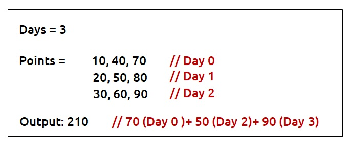

Disclaimer: Don’t jump directly to the solution, try it out yourself first.
Memorization Approach
Algorithm / Intuition
Why a Greedy Solution doesn’t work?
The first approach that comes to our mind is the greedy approach. We will see with an example how a greedy solution doesn’t give the correct solution.
Consider this example:
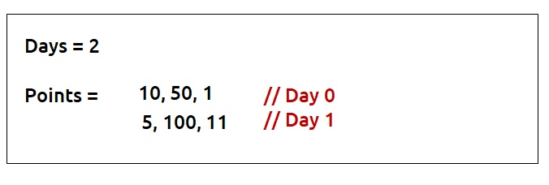
We want to know the maximum amount of merit points. For the greedy approach, we will consider the maximum point activity each day, respecting the condition that activity can’t be performed on consecutive days.
- On Day 0, we will consider the activity with maximum points i.e 50.
- On Day 1, the maximum point activity is 100 but we can’t perform the same activity in two consecutive days. Therefore we will take the next maximum point activity of 11 points.
- Total Merit points by Greedy Solution : 50+11 = 61
As this is a small example we can clearly see that we have a better approach, to consider activity with 10 points on day0 and 100 points on day1. It gives us the total merit points as 110 which is better than the greedy solution.
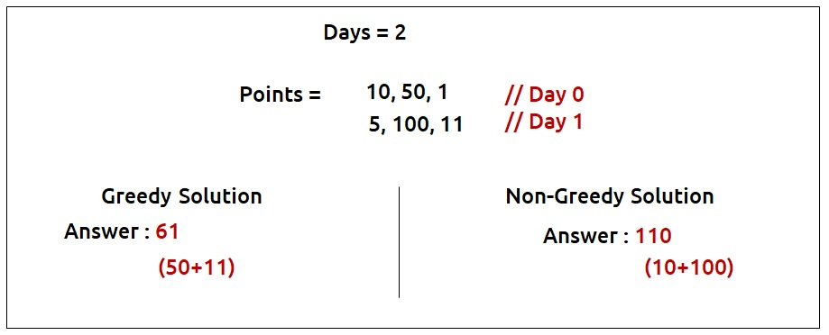
So we see that the greedy solution restricts us from choices and we can lose activity with better points on the next day in the greedy solution. Therefore, it is better to try out all the possible choices as our next solution. We will use recursion to generate all the possible choices.
Steps to form the recursive solution:
We will first form the recursive solution by the three points mentioned in Dynamic Programming Introduction.
Step 1: Express the problem in terms of indexes.
Now given an example, what is the one clear parameter which breaks the problem in different steps?
It is the number of days. Clearly, we have n days (from 0 to n-1), so one changing parameter which can be expressed in terms of indexes is ‘day’.
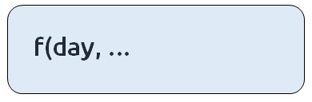
Every day we have the option of three activities(say 0,1,2) to be performed. Suppose that we are at a day_i ( shown in the fig) in the example given below. What is one more parameter along with the day that we must know to try out the correct choices at day_i?
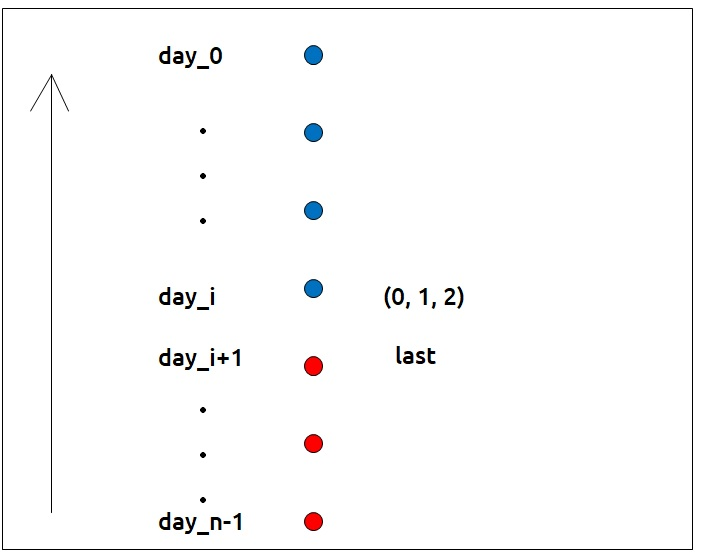
It is the ‘last’ choice that we tried out on day_i+1 ( i+1 in case of top-down recursion). Unless we know the last choice we made, how can we decide whether a choice we are making is correct or not?
Now there are three options each day(say 0,1,2) which becomes the ‘last’ of the next day. If we are just starting from the day_n-1, then for the day_n-1 we can try all three options. We can say ‘last’ for day_n-1 is 3.
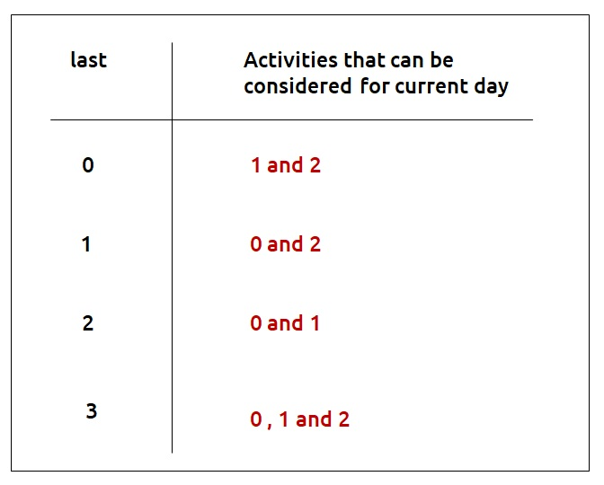
Therefore our function will take two parameters - day and last.
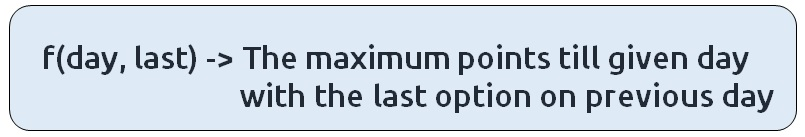
Step 2: Try out all possible choices at a given index.
We are writing a top-down recursive function. We start from day_n-1 to day_0. Therefore whenever we call the recursive function for the next day we call it for f(day-1, //second parameter).
Now let’s discuss the second parameter. The choices we have for a current day depend on the ‘last’ variable. If we are at our base case (day=0), we will have the following choices.
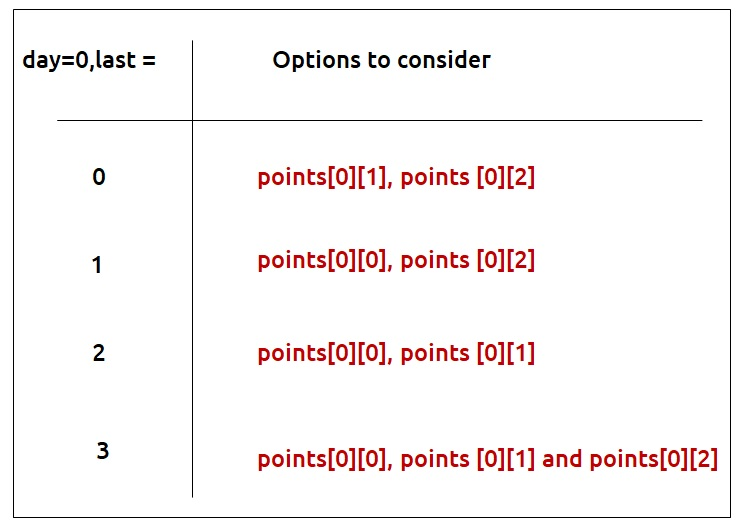
Other than the base case, whenever we perform an activity ‘i’ its merit points will be given by points[day][i] and to get merit points of the remaining days we will let recursion do its job by passing f(d-1, i). We are passing the second parameter as i because the current day’s activity will become the next day’s last.
Step 3: Take the maximum of all choices
As the problem statement wants us to find the maximum merit points, we will take the maximum of all choices.
The final pseudocode after steps 1, 2, and 3:
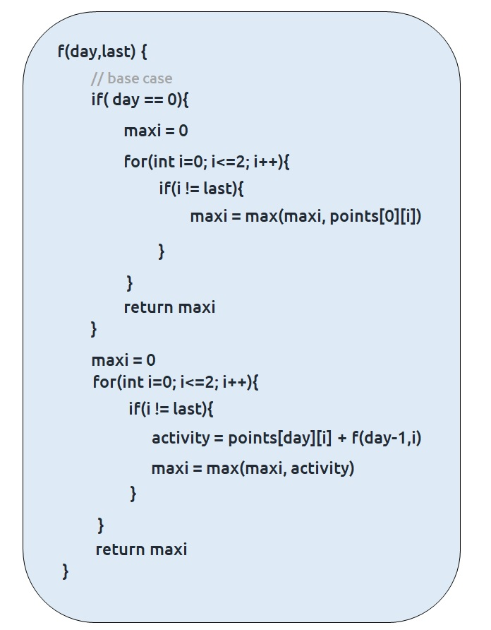
Steps to memoize a recursive solution:
If we draw the recursion tree, we will see that there are overlapping subproblems. In order to convert a recursive solution to the following steps will be taken:
- Create a dp array of size [n][4]. There are total ‘n’ days and for every day, there can be 4 choices (0,1,2 and 3). Therefore we take the dp array as dp[n][4].
- Whenever we want to find the answer of particular parameters (say f(day,last)), we first check whether the answer is already calculated using the dp array(i.e dp[day][last]!= -1 ). If yes, simply return the value from the dp array.
- If not, then we are finding the answer for the given value for the first time, we will use the recursive relation as usual but before returning from the function, we will set dp[day][last] to the solution we get.
Code
#include <bits/stdc++.h>
using namespace std;
// Recursive function to calculate the maximum points for the ninja training
int f(int day, int last, vector<vector<int>> &points, vector<vector<int>> &dp) {
// If the result for this day and last activity is already calculated, return it
if (dp[day][last] != -1) return dp[day][last];
// Base case: When we reach the first day (day == 0)
if (day == 0) {
int maxi = 0;
// Calculate the maximum points for the first day by choosing an activity
// different from the last one
for (int i = 0; i <= 2; i++) {
if (i != last)
maxi = max(maxi, points[0][i]);
}
// Store the result in dp array and return it
return dp[day][last] = maxi;
}
int maxi = 0;
// Iterate through the activities for the current day
for (int i = 0; i <= 2; i++) {
if (i != last) {
// Calculate the points for the current activity and add it to the
// maximum points obtained so far (recursively calculated)
int activity = points[day][i] + f(day - 1, i, points, dp);
maxi = max(maxi, activity);
}
}
// Store the result in dp array and return it
return dp[day][last] = maxi;
}
// Function to find the maximum points for ninja training
int ninjaTraining(int n, vector<vector<int>> &points) {
// Create a memoization table (dp) to store intermediate results
vector<vector<int>> dp(n, vector<int>(4, -1));
// Start the recursive calculation from the last day with no previous activity
return f(n - 1, 3, points, dp);
}
int main() {
// Define the points matrix
vector<vector<int>> points = {{10, 40, 70},
{20, 50, 80},
{30, 60, 90}};
int n = points.size(); // Get the number of days
// Call the ninjaTraining function to find the maximum points and print the result
cout << ninjaTraining(n, points);
}
import java.util.*;
class TUF {
// Recursive function to calculate the maximum points for the ninja training
static int f(int day, int last, int[][] points, int[][] dp) {
// If the result is already calculated, return it
if (dp[day][last] != -1) return dp[day][last];
// Base case: When it's the first day (day == 0)
if (day == 0) {
int maxi = 0;
for (int i = 0; i <= 2; i++) {
if (i != last)
maxi = Math.max(maxi, points[0][i]);
}
return dp[day][last] = maxi; // Store and return the result
}
int maxi = 0;
// Loop through the three activities on the current day
for (int i = 0; i <= 2; i++) {
if (i != last) {
// Calculate the points for the current activity and recursively
// calculate the maximum points for the previous day
int activity = points[day][i] + f(day - 1, i, points, dp);
maxi = Math.max(maxi, activity); // Update the maximum points
}
}
return dp[day][last] = maxi; // Store and return the result
}
// Function to find the maximum points for ninja training
static int ninjaTraining(int n, int[][] points) {
// Initialize a memoization table with -1 values
int dp[][] = new int[n][4];
for (int[] row : dp)
Arrays.fill(row, -1);
// Start the recursive calculation from the last day (n - 1) with the last activity (3)
return f(n - 1, 3, points, dp);
}
public static void main(String args[]) {
// Define the points for each activity on each day
int[][] points = {{10, 40, 70},
{20, 50, 80},
{30, 60, 90}};
int n = points.length; // Get the number of days
System.out.println(ninjaTraining(n, points)); // Calculate and print the maximum points
}
}
def f(day, last, points, dp):
# Check if the result for this day and last activity is already computed.
if dp[day][last] != -1:
return dp[day][last]
# Base case: When we reach day 0, return the maximum point for the last day.
if day == 0:
maxi = 0
for i in range(3):
if i != last:
maxi = max(maxi, points[0][i])
dp[day][last] = maxi
return dp[day][last]
maxi = 0
# Iterate through all activities for the current day.
for i in range(3):
if i != last:
# Calculate the total points for the current day's activity and recursively call for the previous day.
activity = points[day][i] + f(day - 1, i, points, dp)
maxi = max(maxi, activity)
# Store the maximum points in the DP table and return it.
dp[day][last] = maxi
return dp[day][last]
def ninjaTraining(n, points):
# Initialize a DP table to store the computed results.
dp = [[-1 for j in range(4)] for i in range(n)]
# Start the recursive function from the last day with no previous activity.
return f(n - 1, 3, points, dp)
def main():
# Define the points matrix for each day.
points = [[10, 40, 70],
[20, 50, 80],
[30, 60, 90]]
n = len(points) # Get the number of days.
# Call the ninjaTraining function to find the maximum points.
print(ninjaTraining(n, points))
if __name__ == '__main__':
main()
function ninjaTraining(n, points) {
// Create a 2D array 'dp' with dimensions (n x 4) and initialize it with -1
let dp = new Array(n);
for (let i = 0; i < n; i++) {
dp[i] = new Array(4).fill(-1);
}
// Define the recursive function 'f' with parameters 'day', 'last', 'points', and 'dp'
function f(day, last) {
// If the result is already calculated, return it from 'dp'
if (dp[day][last] !== -1) return dp[day][last];
// Base case: When 'day' is 0, calculate the maximum points for the last day
if (day === 0) {
let maxi = 0;
for (let i = 0; i <= 2; i++) {
if (i !== last) {
maxi = Math.max(maxi, points[0][i]);
}
}
return dp[day][last] = maxi;
}
// Initialize 'maxi' to store the maximum points
let maxi = 0;
// Iterate through the activities for the current day
for (let i = 0; i <= 2; i++) {
if (i !== last) {
// Calculate the points for the current activity and recursively call 'f' for the previous day
let activity = points[day][i] + f(day - 1, i);
maxi = Math.max(maxi, activity);
}
}
// Store the result in 'dp' and return it
return dp[day][last] = maxi;
}
// Call the recursive function 'f' to find the maximum points starting from day 'n-1' and 'last' activity 3
return f(n - 1, 3);
}
// Define the 'points' array with the ninja training data
let points = [
[10, 40, 70],
[20, 50, 80],
[30, 60, 90]
];
// Get the number of days
let n = points.length;
// Call the 'ninjaTraining' function and print the result
console.log(ninjaTraining(n, points));
Output: 210
Complexity Analysis
Time Complexity: O(N*4*3)
Reason: There are N*4 states and for every state, we are running a for loop iterating three times.
Space Complexity: O(N) + O(N*4)
Reason: We are using a recursion stack space(O(N)) and a 2D array (again O(N*4)). Therefore total space complexity will be O(N) + O(N) ≈ O(N)
Tabulation Approach
Algorithm / Intuition
Steps to convert Recursive Solution to Tabulation one.
- Declare a dp[] array of size [n][4]
- First initialize the base condition values. We know that base condition arises when day = 0. Therefore, we can say that the following will be the base conditions
- dp[0][0] = max(points[0][1], points[0][2])
- dp[0][1] = max(points[0][0], points[0][2])
- dp[0][2] = max(points[0][0], points[0][1])
- dp[0][3] = max(points[0][0], points[0][1] and points[0][2])
- Set an iterative loop which traverses dp array (from index 1 to n) and for every index set its value according to the recursive logic
Code
#include <bits/stdc++.h>
using namespace std;
// Function to find the maximum points for ninja training
int ninjaTraining(int n, vector<vector<int>>& points) {
// Create a 2D DP (Dynamic Programming) table to store the maximum points
// dp[i][j] represents the maximum points at day i, considering the last activity as j
vector<vector<int>> dp(n, vector<int>(4, 0));
// Initialize the DP table for the first day (day 0)
dp[0][0] = max(points[0][1], points[0][2]);
dp[0][1] = max(points[0][0], points[0][2]);
dp[0][2] = max(points[0][0], points[0][1]);
dp[0][3] = max(points[0][0], max(points[0][1], points[0][2]));
// Iterate through the days starting from day 1
for (int day = 1; day < n; day++) {
for (int last = 0; last < 4; last++) {
dp[day][last] = 0;
// Iterate through the tasks for the current day
for (int task = 0; task <= 2; task++) {
if (task != last) {
// Calculate the points for the current activity and add it to the
// maximum points obtained on the previous day (recursively calculated)
int activity = points[day][task] + dp[day - 1][task];
// Update the maximum points for the current day and last activity
dp[day][last] = max(dp[day][last], activity);
}
}
}
}
// The maximum points for the last day with any activity can be found in dp[n-1][3]
return dp[n - 1][3];
}
int main() {
// Define the points matrix
vector<vector<int>> points = {{10, 40, 70},
{20, 50, 80},
{30, 60, 90}};
int n = points.size(); // Get the number of days
// Call the ninjaTraining function to find the maximum points and print the result
cout << ninjaTraining(n, points);
}
import java.util.*;
class TUF {
// Function to find the maximum points for ninja training
static int ninjaTraining(int n, int[][] points) {
// Initialize a 2D array 'dp' to store the maximum points
int[][] dp = new int[n][4];
// Initialize the first day's maximum points based on the available choices
dp[0][0] = Math.max(points[0][1], points[0][2]);
dp[0][1] = Math.max(points[0][0], points[0][2]);
dp[0][2] = Math.max(points[0][0], points[0][1]);
dp[0][3] = Math.max(points[0][0], Math.max(points[0][1], points[0][2]));
// Iterate through each day and each activity
for (int day = 1; day < n; day++) {
for (int last = 0; last < 4; last++) {
dp[day][last] = 0; // Initialize the maximum points for the current day and last activity
// Consider each possible task for the current day
for (int task = 0; task <= 2; task++) {
if (task != last) { // Ensure that the current task is different from the last
// Calculate the points for the current activity and add it to the maximum points from the previous day
int activity = points[day][task] + dp[day - 1][task];
// Update the maximum points for the current day and last activity
dp[day][last] = Math.max(dp[day][last], activity);
}
}
}
}
// Return the maximum points achievable after all days (last activity is 3)
return dp[n - 1][3];
}
public static void main(String args[]) {
// Define the points for each activity on each day
int[][] points = {{10, 40, 70},
{20, 50, 80},
{30, 60, 90}};
int n = points.length; // Get the number of days
System.out.println(ninjaTraining(n, points)); // Calculate and print the maximum points
}
}
def ninjaTraining(n, points):
# Initialize a DP table with dimensions (n x 4) to store the maximum points.
dp = [[0 for j in range(4)] for i in range(n)]
# Initialize the DP table for day 0 with base cases.
dp[0][0] = max(points[0][1], points[0][2])
dp[0][1] = max(points[0][0], points[0][2])
dp[0][2] = max(points[0][0], points[0][1])
dp[0][3] = max(points[0][0], max(points[0][1], points[0][2]))
# Loop through the days starting from the second day.
for day in range(1, n):
for last in range(4):
dp[day][last] = 0 # Initialize the maximum points for the current day and last activity.
for task in range(3):
if task != last:
# Calculate the total points for the current day's activity and the previous day's maximum points.
activity = points[day][task] + dp[day - 1][task]
dp[day][last] = max(dp[day][last], activity)
# Return the maximum points achievable after the last day with any activity.
return dp[n - 1][3]
def main():
# Define the points matrix for each day.
points = [[10, 40, 70],
[20, 50, 80],
[30, 60, 90]]
n = len(points) # Get the number of days.
# Call the ninjaTraining function to find the maximum points.
print(ninjaTraining(n, points))
if __name__ == '__main__':
main()
function ninjaTraining(n, points) {
// Create a 2D array 'dp' with dimensions (n x 4) and initialize it with 0
let dp = new Array(n);
for (let i = 0; i < n; i++) {
dp[i] = new Array(4).fill(0);
}
// Initialize the base cases for the first day
dp[0][0] = Math.max(points[0][1], points[0][2]);
dp[0][1] = Math.max(points[0][0], points[0][2]);
dp[0][2] = Math.max(points[0][0], points[0][1]);
dp[0][3] = Math.max(points[0][0], Math.max(points[0][1], points[0][2]));
// Loop through each day and calculate the maximum points
for (let day = 1; day < n; day++) {
for (let last = 0; last < 4; last++) {
dp[day][last] = 0;
for (let task = 0; task <= 2; task++) {
if (task !== last) {
// Calculate the points for the current activity and update 'dp'
let activity = points[day][task] + dp[day - 1][task];
dp[day][last] = Math.max(dp[day][last], activity);
}
}
}
}
// The maximum points are stored in dp[n-1][3]
return dp[n - 1][3];
}
// Define the 'points' array with the ninja training data
let points = [
[10, 40, 70],
[20, 50, 80],
[30, 60, 90]
];
// Get the number of days
let n = points.length;
// Call the 'ninjaTraining' function and print the result
console.log(ninjaTraining(n, points));
Output: 210
Complexity Analysis
Time Complexity: O(N*4*3)
Reason: There are three nested loops
Space Complexity: O(N*4)
Reason: We are using an external array of size ‘N*4’’.
Space Optimization Approach
Algorithm / Intuition
If we closely look the relation,
dp[day][last] = max(dp[day][last],points[day][task] + dp[day-1][task])
Here the task can be anything from 0 to 3 and day-1 is the previous stage of recursion. So in order to compute any dp array value, we only require the last row to calculate it.
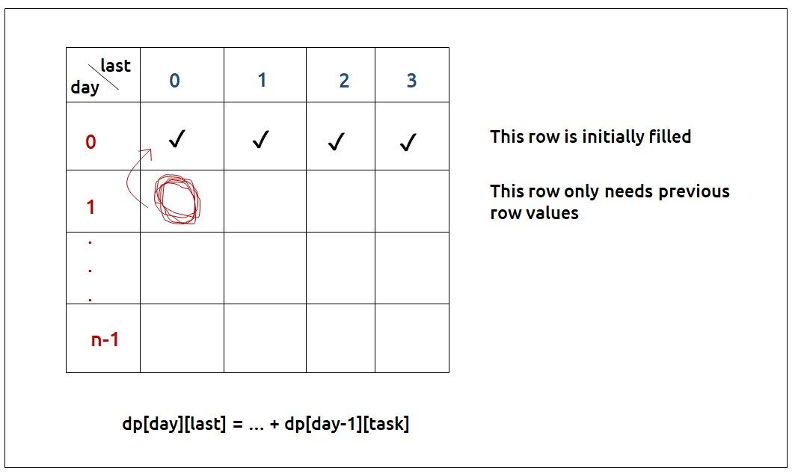
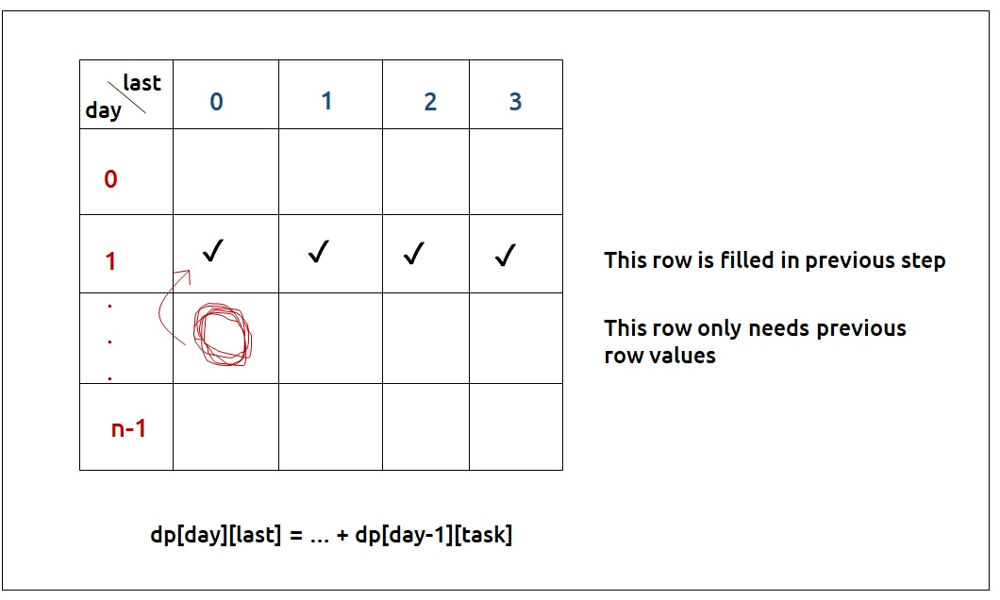
- So rather than storing the entire 2D Array of size N*4, we can just store values of size 4(say prev).
- We can then take a dummy array, again of size 4 (say temp) and calculate the next row’s value using the array we stored in step 1.
- After that whenever we move to the next day, the temp array becomes our prev for the next step.
- At last prev[3] will give us the answer.
Code
#include <bits/stdc++.h>
using namespace std;
// Function to find the maximum points for ninja training
int ninjaTraining(int n, vector<vector<int>>& points) {
// Initialize a vector to store the maximum points for the previous day's activities
vector<int> prev(4, 0);
// Initialize the DP table for the first day (day 0)
prev[0] = max(points[0][1], points[0][2]);
prev[1] = max(points[0][0], points[0][2]);
prev[2] = max(points[0][0], points[0][1]);
prev[3] = max(points[0][0], max(points[0][1], points[0][2]));
// Iterate through the days starting from day 1
for (int day = 1; day < n; day++) {
// Create a temporary vector to store the maximum points for the current day's activities
vector<int> temp(4, 0);
for (int last = 0; last < 4; last++) {
temp[last] = 0;
// Iterate through the tasks for the current day
for (int task = 0; task <= 2; task++) {
if (task != last) {
// Calculate the points for the current activity and add it to the
// maximum points obtained on the previous day (stored in prev)
temp[last] = max(temp[last], points[day][task] + prev[task]);
}
}
}
// Update prev with the maximum points for the current day
prev = temp;
}
// The maximum points for the last day with any activity can be found in prev[3]
return prev[3];
}
int main() {
// Define the points matrix
vector<vector<int>> points = {{10, 40, 70},
{20, 50, 80},
{30, 60, 90}};
int n = points.size(); // Get the number of days
// Call the ninjaTraining function to find the maximum points and print the result
cout << ninjaTraining(n, points);
}
import java.util.*;
class TUF {
// Function to find the maximum points for ninja training
static int ninjaTraining(int n, int[][] points) {
// Initialize an array 'prev' to store the maximum points for the previous day
int prev[] = new int[4];
// Initialize the first day's maximum points based on the available choices
prev[0] = Math.max(points[0][1], points[0][2]);
prev[1] = Math.max(points[0][0], points[0][2]);
prev[2] = Math.max(points[0][0], points[0][1]);
prev[3] = Math.max(points[0][0], Math.max(points[0][1], points[0][2]));
// Iterate through each day starting from the second day
for (int day = 1; day < n; day++) {
// Initialize an array 'temp' to store the maximum points for the current day
int temp[] = new int[4];
for (int last = 0; last < 4; last++) {
temp[last] = 0; // Initialize the maximum points for the current day and last activity
// Consider each possible task for the current day
for (int task = 0; task <= 2; task++) {
if (task != last) { // Ensure that the current task is different from the last
// Calculate the points for the current activity and add it to the maximum points from the previous day
temp[last] = Math.max(temp[last], points[day][task] + prev[task]);
}
}
}
// Update 'prev' to store the maximum points for the current day
prev = temp;
}
// Return the maximum points achievable after all days (last activity is 3)
return prev[3];
}
public static void main(String args[]) {
// Define the points for each activity on each day
int[][] points = {{10, 40, 70},
{20, 50, 80},
{30, 60, 90}};
int n = points.length; // Get the number of days
System.out.println(ninjaTraining(n, points)); // Calculate and print the maximum points
}
}
def ninjaTraining(n, points):
# Initialize a list 'prev' to store the maximum points for each possible last activity on the previous day.
prev = [0] * 4
# Initialize 'prev' with the maximum points for the first day's activities.
prev[0] = max(points[0][1], points[0][2])
prev[1] = max(points[0][0], points[0][2])
prev[2] = max(points[0][0], points[0][1])
prev[3] = max(points[0][0], max(points[0][1], points[0][2]))
# Loop through the days starting from the second day.
for day in range(1, n):
# Initialize a temporary list 'temp' to store the maximum points for each possible last activity on the current day.
temp = [0] * 4
for last in range(4):
# Initialize 'temp' for the current last activity.
temp[last] = 0
for task in range(3):
if task != last:
# Calculate the total points for the current day's activity and the previous day's maximum points.
activity = points[day][task] + prev[task]
# Update 'temp' with the maximum points for the current last activity.
temp[last] = max(temp[last], activity)
# Update 'prev' with 'temp' for the next iteration.
prev = temp
# Return the maximum points achievable after the last day with any activity.
return prev[3]
def main():
# Define the points matrix for each day.
points = [[10, 40, 70],
[20, 50, 80],
[30, 60, 90]]
n = len(points) # Get the number of days.
# Call the ninjaTraining function to find and print the maximum points.
print(ninjaTraining(n, points))
if __name__ == '__main__':
main()
function ninjaTraining(n, points) {
// Initialize the 'prev' array with 4 elements, all set to 0
let prev = new Array(4).fill(0);
// Initialize the base cases for the first day
prev[0] = Math.max(points[0][1], points[0][2]);
prev[1] = Math.max(points[0][0], points[0][2]);
prev[2] = Math.max(points[0][0], points[0][1]);
prev[3] = Math.max(points[0][0], Math.max(points[0][1], points[0][2]));
// Loop through each day and calculate the maximum points
for (let day = 1; day < n; day++) {
// Initialize a temporary 'temp' array with 4 elements, all set to 0
let temp = new Array(4).fill(0);
for (let last = 0; last < 4; last++) {
// Initialize the current 'temp' value to 0
temp[last] = 0;
for (let task = 0; task <= 2; task++) {
if (task !== last) {
// Calculate the points for the current activity and update 'temp'
temp[last] = Math.max(temp[last], points[day][task] + prev[task]);
}
}
}
// Update 'prev' with the values from 'temp' for the next iteration
prev = temp;
}
// The maximum points are stored in 'prev[3]'
return prev[3];
}
// Define the 'points' array with the ninja training data
let points = [
[10, 40, 70],
[20, 50, 80],
[30, 60, 90]
];
// Get the number of days
let n = points.length;
// Call the 'ninjaTraining' function and print the result
console.log(ninjaTraining(n, points));
Output:210
Complexity Analysis
Time Complexity: O(N*4*3)
Reason: There are three nested loops
Space Complexity: O(4)
Reason: We are using an external array of size ‘4’ to store only one row.
Video Explanation
Special thanks to Anshuman Sharma and Abhipsita Das for contributing to this article on takeUforward. If you also wish to share your knowledge with the takeUforward fam, please check out this article